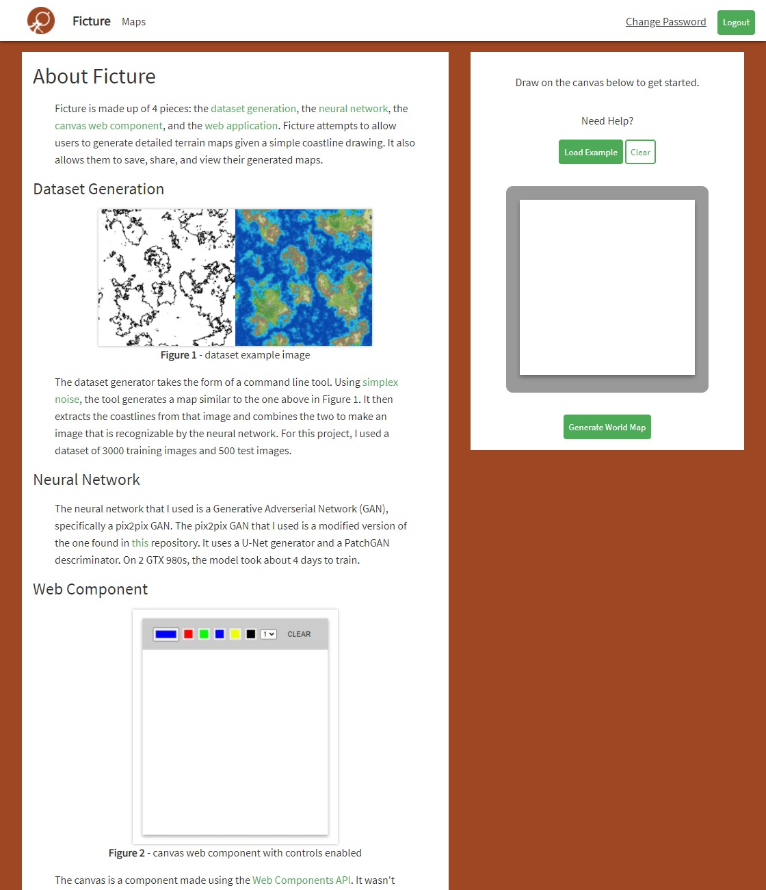
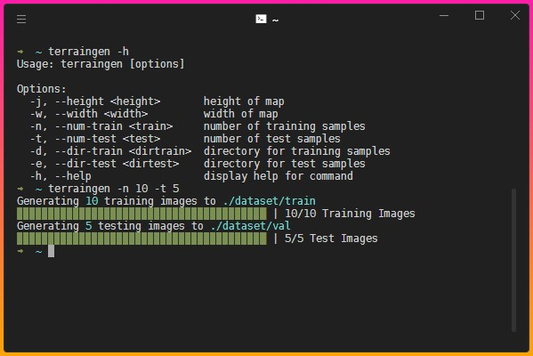
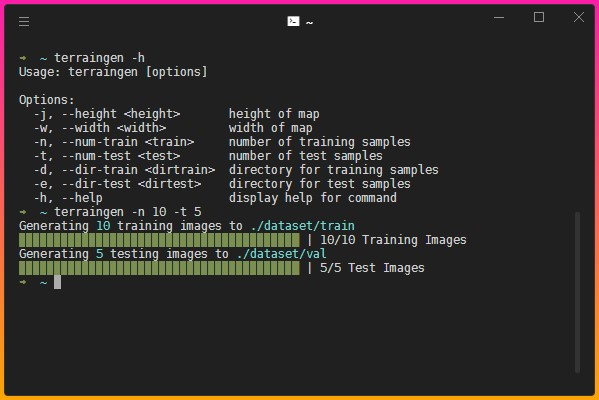
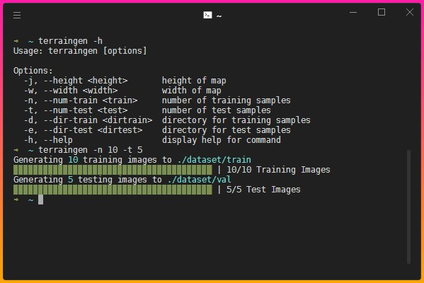

Ficture is an app for world-builders and authors looking to find inspiration in designing their worlds. Ficture uses machine learning to generate unique terrain maps based on your simple coastline drawings. You can use it to generate and share your own maps or see other people's generated maps.

 

